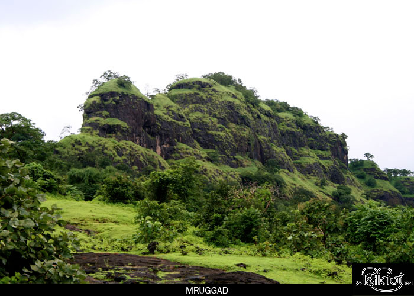
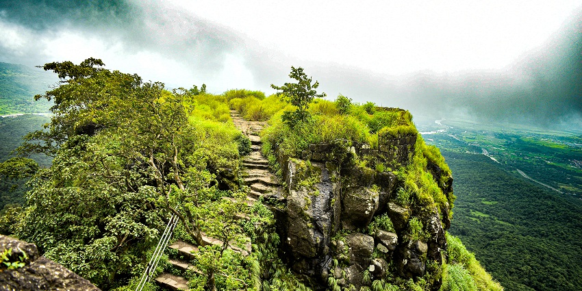

मृगगड किल्ला
Location : Click Here For Google Map
- माहिती
- मृगगड किल्ला, जो पुणे जिल्ह्यात स्थित आहे, महाराष्ट्रातील एक ऐतिहासिक किल्ला आहे. किल्ल्याची उंची सुमारे १,०५० मीटर (३,४५० फूट) आहे. मृगगड किल्ल्याचे महत्व ऐतिहासिक आणि रणनीतिक दृष्ट्या अत्यंत महत्त्वाचे आहे. किल्ल्याच्या शिखरावर चढायला काही कठीण चढाई करावी लागते, जे ट्रेकिंग प्रेमींसाठी एक आव्हानात्मक ठिकाण बनवते. किल्ल्याच्या शिखरावर एक पवित्र मंदिर आहे, तसेच किल्ल्याची संरचना आणि सुरक्षा भिंती अत्यंत मजबूत आहेत. किल्ल्याच्या इतिहासाचा संबंध मराठा साम्राज्याशी आहे, आणि तो एक महत्त्वाचा किल्ला होता.
Explore the historical beauty

